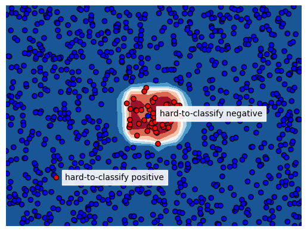
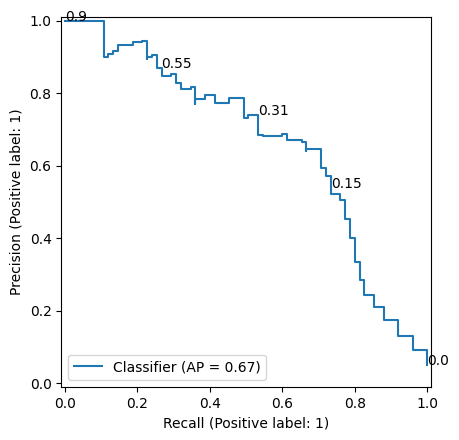
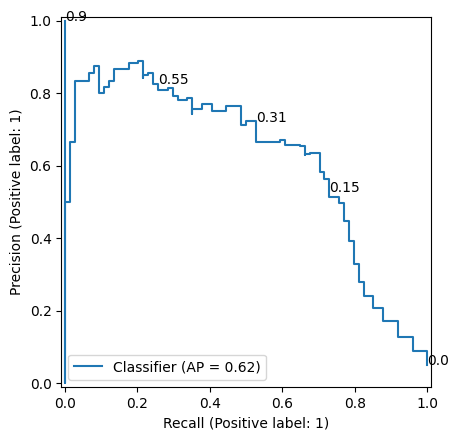
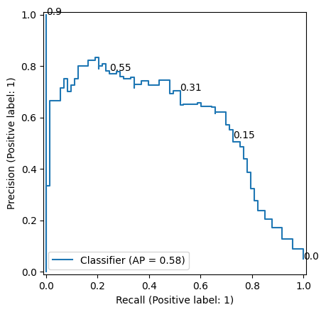

Hard-to-classify datapoints in imbalanced data problems
Instance hardness
Classification for imbalanced data problems is hard; it requires paying attention to balancing classes when training and choosing the right model performance metric. Many articles are written about imbalanced classification and packages containing metrics and sampling techniques are open sourced. One important aspect on classification for imbalanced data problems is given insufficient attention; ‘instance hardness’ and cross validation.
The term instance hardness is used in literature to express the difficulty to correctly classify an instance. An instance could be hard to classify because its neighbors in the feature space have a different label, the features just don’t bear the information to correctly predict the class for such instance. We see these cases a lot in the field of financial crime detection; all features for a particular transaction indicate riskyness but in reality the transaction was just legit or vice versa. The literature about instance hardness describes how to measure it and how to use these measures for resampling training data and thereby removing hard-to-classify instances to improve test set performance.
The way hard-to-classify instances are distributed over train and test sets (e.g. in hyperparameter tuning or feature selection using cross validation) has significant effect on the test set performance metrics. A few instances with large instance hardness can change results significantly. In this blog I will explain this problem and show a solution to limit its effect on cross validation metric variance.
Area Under Precision Recall Curve
Let’s start by creating a dataset to work with. We create a dataset with 5% class imbalance using scikit-learn’s make_classification function and we make a train test split. Note that we set flip_y to zero to prevent labels from being randomly flipped.
from sklearn.datasets import make_classification
from sklearn.model_selection import train_test_split
random_state = 1
X, y = make_classification(n_samples=5_000,
weights=[0.95, 0.05],
flip_y=0,
random_state=random_state)
X_train, X_test, y_train, y_test = train_test_split(X, y,
test_size=0.3,
stratify=y,
random_state=random_state)Then we take a Random Forest classifier, fit it on the train data and make predictions on the test data. We ommit hyperparameter tuning because that wouldn’t serve explanation of this blog post topic. We plot the precision recall curve in Figure 2. Our classification model obtained a AUC-PR value of 0.67.
from sklearn.ensemble import RandomForestClassifier
clf = (RandomForestClassifier(class_weight='balanced',
random_state=random_state)
.fit(X_train, y_train))
probas = clf.predict_proba(X_test)[:,1]
df = pd.DataFrame({'y':y_test, 'proba':probas})
Now we are going to flip the label of just one sample in our test set to see its effect on AUC-PR. We change the label of the sample with label 1 and the largest score (given by our random forest) from 1 to 0. Table 1 (a) and Table 1 (b) show how this changes the samples with highest scores in the data used for AUC-PR calculation. Figure 3 (a) and Figure 3 (b) show the precision-recall curve before and after the flip. As you can see, only flipping the label for this single point reduces the AUC-PR from 0.67 to 0.62. If we do this another time (Table 1 (c) and Figure 3 (c)), the AUC-PR drops further to 0.58. This shows how strong few samples with large instance hardness affect AUC-PR.
def flip_label_highest_score(df):
idx_to_change = df[df['y']==1].sort_values('proba').index[-1]
df.loc[idx_to_change, 'y'] = 0
return dfdf = flip_label_highest_score(df)| y | proba |
|---|---|
| 1 | 0.90 |
| 1 | 0.86 |
| 1 | 0.84 |
| 1 | 0.78 |
| 1 | 0.78 |
| y | proba |
|---|---|
| 0 | 0.90 |
| 1 | 0.86 |
| 1 | 0.84 |
| 1 | 0.78 |
| 1 | 0.78 |
| y | proba |
|---|---|
| 0 | 0.90 |
| 0 | 0.86 |
| 1 | 0.84 |
| 1 | 0.78 |
| 1 | 0.78 |



Instance hardness and cross validation
This blog post is not a complaint about AUC-PR; this model performance metric is well suited for imbalanced data problems just because it is sensitive for model performance for the minority class. The effect of a few points can become large when we make train-test splits for example in cross validation when doing hyperparameter tuning. If multiple hard-to-classifiy samples end up in the same fold, the AUC-PR value for that fold will be significanty lower as we have seen above. Let’s show this with the following experiment.
For this experiment, we use our train set and we create out of sample model scores using scikit-learn’s cross_val_predict function and a random forest classifier without hyperparameter tuning. As earlier, we flip the label for positive samples with the largest model score. We do this for 10 samples. Then we obtain cross validation AUC-PR values using cross_val_score with 3 folds. To show how randomness affects in which folds the hard-to-classify samples end up, we do this experiment 5 times. Table 2 shows how the AUC-PR scores differ over the folds. This potentially impacts hyperparameter tuning as hyperparameter combinations that are accidentically tested on a test fold without hard-to-classify samples will be favoured.
| run | cv fold 1 | cv fold 2 | cv fold 3 | max diff |
|---|---|---|---|---|
| 1 | 0.503364 | 0.417450 | 0.457315 | 0.085914 |
| 2 | 0.425198 | 0.522625 | 0.486998 | 0.097427 |
| 3 | 0.386822 | 0.481074 | 0.627011 | 0.240189 |
| 4 | 0.397935 | 0.563807 | 0.508088 | 0.165872 |
| 5 | 0.510637 | 0.553232 | 0.475470 | 0.077762 |
The goal is now to make sure these hard-to-classify samples are equally distributed over the folds. To that end, ‘instance hardness’ is defined as 1 minus the probability of the most probable class. In the case of binary classification:
H(x)=1-P(\hat{y}|x)
In this equation H(x) is the instance hardness for a sample with features x and P(\hat{y}|x) the probability of predicted label \hat{y} given the features. Note that this is the probability of the predicted label, not the output of predict_proba; if the model predicts label 0 and gives a predict_proba output of 0.1, the probability of label 0 is 0.9.
Now we redo the exercise, but we create splits such that instance hardness is equally spread over the folds. We do this by calculating instance hardness (using cross_val_predict), sorting our data by instance hardness and creating cv groups by just adding a column containing the row number modulo cv, resulting in 0, 1, 2, 0, 1, 2 etc when cv=3. These values are then used as argument for groups in cross_val_score. To enable the usage of these groups, we need to use a cv splitter that takes groups into account, such as the StratifiedGroupKFold splitter. Table 3 shows how the out-of-sample AUC-PR values are much closer to each other.
| run | cv fold 1 | cv fold 2 | cv fold 3 | max diff |
|---|---|---|---|---|
| 1 | 0.475672 | 0.508276 | 0.529008 | 0.053336 |
| 2 | 0.490002 | 0.548628 | 0.506362 | 0.058626 |
| 3 | 0.473555 | 0.488436 | 0.534512 | 0.060957 |
| 4 | 0.528816 | 0.472013 | 0.471103 | 0.057714 |
| 5 | 0.518430 | 0.480128 | 0.461425 | 0.057004 |
Implementation of InstanceHardnessCV
Let’s now implement a scikit-learn CV splitter that does all the steps above. This cv splitter can be used for hyperparameter tuning, feature selection or any other scikit-learn object that has a cv argument.
class InstanceHardnessCV:
def __init__(self, n_splits=3, clf=None, random_state=None):
self.n_splits = n_splits
self.clf = clf
self.random_state = random_state
def split(self, X, y, groups=None):
df = pd.DataFrame(X)
features = df.columns
df['y'] = y
if self.clf is not None:
self.clf_ = self.clf
else:
self.clf_ = RandomForestClassifier(n_jobs=-1,
class_weight='balanced',
random_state=self.random_state)
df['proba'] = cross_val_predict(self.clf_,
df[features],
df['y'],
cv=self.n_splits,
method='predict_proba')[:,1]
df['hardness'] = abs(df['y']-df['proba'])
df = df.sort_values('hardness')
df['group'] = np.arange(len(df)) % self.n_splits
cv = StratifiedGroupKFold(n_splits=self.n_splits,
shuffle=True,
random_state=self.random_state)
for train_index, test_index in cv.split(df[features], df['y'], df['group']):
yield train_index, test_index
def get_n_splits(self, X, y, groups=None):
return self.n_splitsWhen we apply our InstanceHardnessCV splitter to our data with 10 artificially created ‘hard to classify’ datapoints, we get the results as presented before.
| run | cv fold 1 | cv fold 2 | cv fold 3 | max diff |
|---|---|---|---|---|
| 1 | 0.529008 | 0.475672 | 0.508276 | 0.053336 |
| 2 | 0.548628 | 0.506362 | 0.490002 | 0.058626 |
| 3 | 0.534512 | 0.473555 | 0.488436 | 0.060957 |
| 4 | 0.528816 | 0.472013 | 0.471103 | 0.057714 |
| 5 | 0.518430 | 0.480128 | 0.461425 | 0.057004 |
One can use a different classifier for calculating instance hardness than the random forest that we set as default. Note that the purpose of this classifier is to identify the difficult samples; the data points for which features suggest a positive label but the ground truth is a negative label. This is the reason why we didn’t pay attention to hyperparameter tuning.